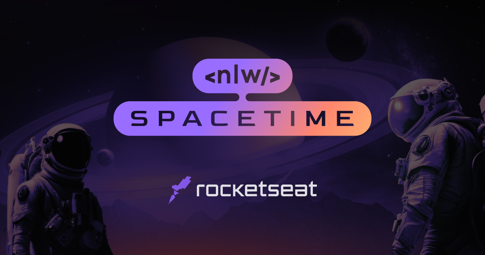

18 de Maio de 2023
A semana NLW Space Time da Rocketseat.

Durante a semana NLW SpaceTime da Rocketseat, na qual participei, tive
uma incrível evolução em minhas habilidades e conhecimentos na área de
desenvolvimento web. Foi uma semana intensa, repleta de desafios e
aprendizados valiosos. Agradeço à Rocketseat por proporcionar essa
oportunidade enriquecedora e inspiradora, e estou ansioso para
explorar novos horizontes no desenvolvimento web.